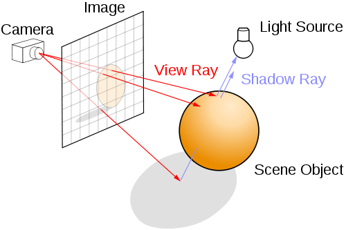

什么是光线追踪
光线追踪是计算机图形领域实现全局光照效果的一种手段
光线追踪由于实现简单,效果优秀,但是效率比较低
所以一直以来大多作为学习之用
一个简单的光线追踪的例子
点击下方的按钮就可以渲染出一张图片哦,纯渲染出的哦(渲染很消耗性能可能会有少许的等待时间)
在线测试
视角坐标:
X: Y: Z: 反射次数:
代码解释
查看本页的源代码可以查找到源代码
核心的代码就是如下几行
1 | var canvas = document.getElementById('renderCanvas'); // 获取画布对象 |
光线追踪
本文的例子实际上是一种光线追踪(ray tracing)的实现.
光线追踪是全局光照(Global Illumination)的其中一中实现方式,该方法原理和实现方法都很简单但需要的计算量比较大,普通游戏无法使用,多用于学习研究性质或离线渲染(offline rendering),游戏中大多用其他技术手段实现类似效果
优点:
- 效果逼真,实现简单
- 自带消隐(消除隐藏面)功能
- 有阴影效果
- 可以并行
- 隐含透视性质
缺点:
- 光线追踪只能模拟光线的镜面反射(specular)行为,无法很好地模拟漫反射(diffuse)
- 容易出现图形走样现象,因为透过两个相邻像素的光线到物体表面的距离会被放大,两像素之间的细节无法表现
基本原理
光线追踪的基本原理比较简单,如下图

从人眼的位置往屏幕上的每个像素发射光线,如果遇到具有反射性质的表面,继续追踪反射光线,最终根据光线返回的颜色去给像素进行着色
因而可以比较简单的表现,反射,阴影折射等效果,但缺点是计算量较大
现在也有很多其他方式可以实现全局光照的效果(例如:辐射度算法,光子映射,甚至采用光照贴图模拟)
这里的光线返回的颜色既是改像素点计算得到的颜色,具体计算方法是根据光线在多个物体表面的反射得到
渲染深度
渲染深度通俗的讲就是根据某一点距离摄像机的距离渲染出不同的颜色,越远的点颜色越暗,近的点略亮
通过计算模拟眼睛与第一个看到的画面上的点的距离,映射到0-255的区间,进行色彩数值的处理
材质
材质是渲染物体所必不可少的一项要素,材质根据自身的光学特性和物理特性决定了光线照射到物体表面某一点所呈现的颜色
Phong光照模型是一种基本的光照模型,可以较为真实的模拟物体表面的某些特性
环境光 + 漫反射 + 镜面反射 = Phong反射
实现材质效果需要一定的特征函数配合
材质往往和纹理一起配合出现
色彩
色彩本身是个极其庞大的学科,本文用到的色彩只是比较简单
仅仅使用增色系统的三原色(RGB)来做一些基本的颜色模拟
使用简单的三元数(R,G,B)来表示颜色的基本信息